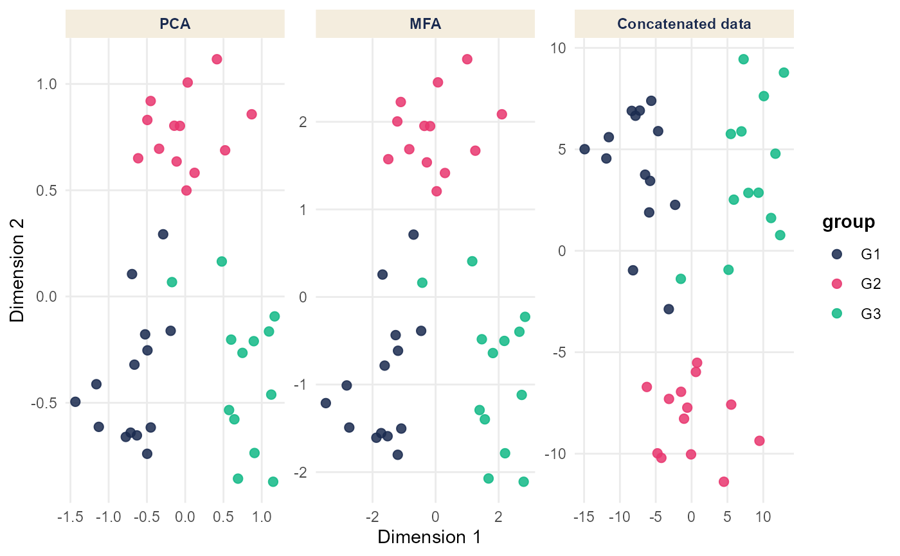

Runs compute_embedding() on the factor scores of each method in a
run_factor_pipeline() result, and optionally on the concatenated input
data, so that methods can be compared visually in one figure.
Arguments
- results
Object returned by
run_factor_pipeline().- type
Character vector, any of
"umap","tsne","pca".- methods
Methods to embed (default: all in
results).- include_data
Logical. Also embed the concatenated preprocessed views (labelled
"Concatenated data"), as a baseline (defaultTRUE).- ...
Passed to
compute_embedding().
Value
A long data frame with columns sample, Dim1, Dim2, method
and type, of class factomics_embedding.
Examples
sim <- simulate_multiomics(n_samples = 40, seed = 1)
res <- run_factor_pipeline(sim$data, methods = c("PCA", "MFA"), k = 4,
verbose = FALSE)
emb <- embed_results(res, type = "pca")
plot_embedding(emb, metadata = sim$metadata, color_by = "group")
